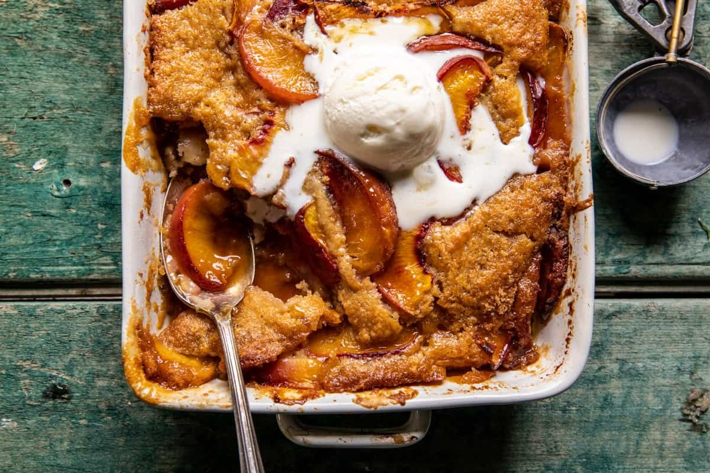

Brown Sugar Peach Cobbler

This old school Easy Brown Sugar Peach Cobbler is the sweetest use for mid/to late summer peaches. Every spoonful is layered with juicy, sweet summer peaches, rich butter, vanilla, warming cinnamon, and plenty of brown sugar to sweeten the deal. The peaches are juicy, while the topping is crisp on the edges, soft in the center, and extra buttery. Top with vanilla ice cream and salted maple butter for the best peach treat of the summer.
Ingredients
Cobbler
- 1 stick (8 tablespoons) salted butter, cubed
- 1 cup all-purpose flour
- 1 cup light or dark brown sugar
- 2 teaspoons baking powder
- 1/2 teaspoon cinnamon
- 1/2 teaspoon kosher salt
- 1 cup milk
- 1 tablespoon vanilla
- 5-6 peaches, cut into 8 wedges
- 2 tablespoons maple syrup
Maple Butter
- 4 tablespoons salted butter
- 1/4 tablespoons maple syrup
Instructions
- Preheat the oven to 375° F. Drop the butter into a 9x13 inch baking dish and place the dish in the oven to melt, about 10 minutes.
- To make the batter. Stir together the flour, 1/2 cup brown sugar, baking powder, cinnamon, and salt. Add the milk and vanilla, mix until just combined.
- In a bowl, toss the peaches with 1/4 cup brown sugar and the maple syrup.
- Layer half of the peaches over the melted butter. Then, pour over the batter, do not stir. Layer the remaining peaches over the batter. Bake 50-55 minutes, until the center is just set and the edges begin to brown.
- Meanwhile, mix the butter and maple together in a pan. Boil 2 minutes, then remove from the heat.
- Serve the cobbler warm or at room temp with ice cream and maple butter drizzled on top.